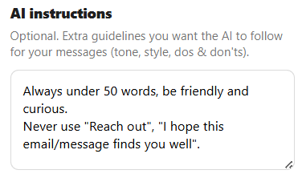

1
FIND (AI-Powered Search)
Describe your ideal customer in plain language. Linky Scout searches LinkedIn, scores every profile with AI, and delivers a ranked list of leads that actually match — no manual filtering, no guesswork.
Join 100+ founders in the waitlist
Linky combines AI-powered prospect research with context-aware message generation — so your LinkedIn outreach feels human, not automated.
You are on the waitlist.
We will notify you before launch.
RESULTS THAT MATTER
1
Describe your ideal customer in plain language. Linky Scout searches LinkedIn, scores every profile with AI, and delivers a ranked list of leads that actually match — no manual filtering, no guesswork.
2
Linky pulls recent posts, comments, and bio data for each lead. Claude analyzes the context to find the perfect conversation angle — a specific pain point, a shared interest, or a recent insight worth discussing.
3
Choose your approach — Pain Point, Trigger, or Engage — and Linky generates a message that references real context. One click to insert it into LinkedIn chat. Authentic conversations, real results.
Most AI tools generate messages from profile data alone — job title, company name, maybe a headline. The result? Messages that feel templated no matter how "personalized" they claim to be. Linky reads what your leads actually write and think.
Generated from static profile data. Feels like a template because it is one.
Status: Likely Ignored
Example (Profile-Only AI)
Hi Jonas,
I was impressed by your work in asset management and financial process optimization at BTV Bank. Your focus on turning financial data into actionable insights resonates with my skills in software development and analytical thinking.
I am eager to explore potential opportunities at BTV that align with my background. Are there any openings that you think might suit my profile?
Thank you for your time, and I look forward to your response.
Focus: Self-promotion and static profile data.
Generated from real posts, comments, and conversations. Feels human because it references what they actually said.
Status: High Reply Rate
Example (Linky + Context)
Hey Jonas, your take on business value over tooling resonated — that gap shows up a lot in data security too, where teams obsess over stack choices but miss the actual exposure underneath. Curious: in your analytics work, do you find that framing matters when you're pitching risk-related findings to stakeholders?
Focus: Real-time context and mutual interest.
Zero Ban Risk
Linky helps you write, it doesn't send messages for you. It's a "human-in-the-loop" tool, meaning you are always in control and 100% compliant with LinkedIn policies.
YES: B2B Founders, Solo-founders, and anyone seeking authentic efficiency.
NO: Spam agencies or those looking for mass-automation bots.
Start with what you need. Upgrade when you grow.
Linky Assistant
$9.99/mo
For founders who want smarter outreach.
Ultimate Bundle
$20.99/mo
Find leads AND convert them — all in one.
Linky Scout
$17.99/mo
For teams that need qualified leads at scale.
Each search runs a multi-step enrichment pipeline — profile overview, role details, recent posts, and AI scoring. On average, one full search costs around 100 credits, giving you 5 searches/mo on the Scout plan and 6 on the Ultimate Bundle.
One-time purchases, no subscription required.
Trial
100 credits
$4.99
Growth
500 credits
$16.99
Scale
1,000 credits
$29.99
Describe your ICP in natural language. Scout searches LinkedIn, enriches every profile, and ranks them by relevance — so you only talk to people who actually fit.
Generate LinkedIn messages that reference real posts, comments, and conversations. Choose your angle — Pain Point, Trigger, or Engage — and let Claude craft the perfect opener.
Tell Claude exactly how to write before it generates a single word. Set custom instructions like:
Claude reads your rules on every generation — so your voice stays consistent across every message.

Never send a generic message again. Feed Linky your value proposition, and Claude will weave your expertise into every conversation. It's your voice, amplified by intelligence.
Everything you need to convert LinkedIn leads, without the complexity of a bloated CRM.
Found a high-value comment or profile? Save it instantly with one click. Linky bookmarks the person and the specific conversation context, so you never have to "remember" why you liked a lead.
Stop losing prospects in your chaotic feed. Linky organizes your saved leads in a clean, searchable library. It's your personal database of people you actually want to talk to.
Choose the best angle for every conversation:
Tired of long AI rambles? Tell Claude exactly how to behave. Set custom rules like "Keep it under 5 lines" or "Never use corporate jargon". Claude reads your instructions before writing a single word.
"The Trigger mode is unreal. I paste a comment and get a message that sounds like I spent 20 minutes writing it. Replies went up immediately."
— B2B SaaS Founder, Linky Assistant user"I described my ICP in two sentences and Scout returned 20 founders that actually matched. No manual filtering, no wasted outreach."
— Head of Growth, Linky Scout user"Scout finds them, Assistant messages them. It's the only LinkedIn workflow that doesn't feel like work."
— Solo Founder, Ultimate Bundle user
We’re just getting started. Join the waitlist to directly shape Linky’s roadmap by proposing and voting on new features. We reward our most active contributors with exclusive lifetime discounts and a permanent spot in the official "App Credits"—where your impact on our growth will be recognized forever.